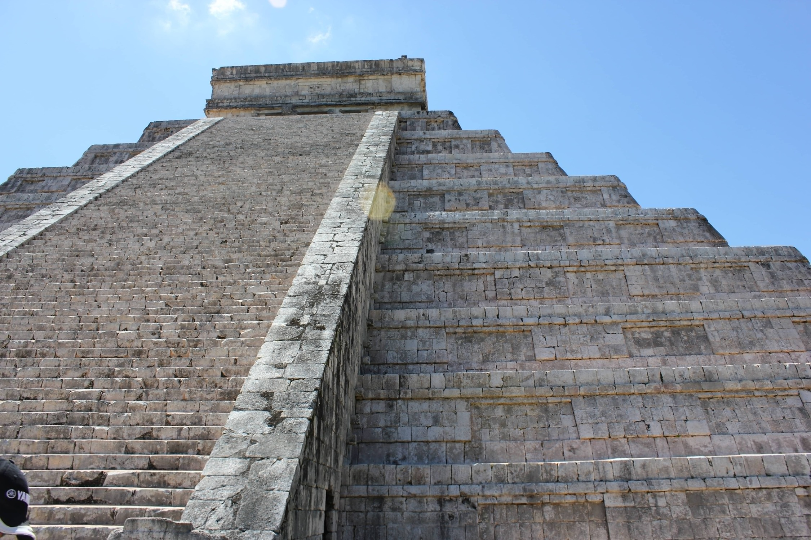

Chichén-Itzá
Some Fact About the Historic Site
People travel for the beach experience, ruins, and the nightlife venues.
Chichén-Itzá is most popular, followed by the smaller Temple of Tulum.

There are also 4 naturally formed sinkholes. The Cenote Sagrado, or ’Sacred Cenote’ is 60ft wide with 29ft sheer cliff faces down to the water.

Popularity of the site has been increasing over the last decade with numbers reaching 2.7 million in 2018.